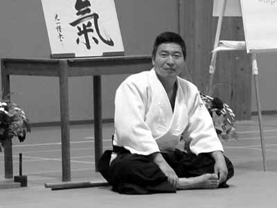

| INICIO | CLASES | TÉCNICAS | VIDEOS | SALUD | SEMINARIO | ORGANIZACIONES | HISTORIA | TEXTOS | BIBLIOGRAFÍA | LINKS |

Textos Recomendados
Yoshigasaki Doshu explica la diferencia entre el "Que Hacer" y el "Como Hacer", abordando finalmente el "Ser" y el "Hacer". Un texto para ser leido en profundidad.
Entendiendo el Concepto de Relación en Ki Aikido.
Llamamos Relación a la conexión mental con algo. Llevar por ejemplo la atención a un objeto es relacionarse con él mentalmente. Esta conexión mental se realiza a través de la Percepción que se basa en los sentidos. Ver, oir, tocar, oler, gustar es percibirlo; es armar, en otras palabras, una relación con algo externo a nosotros mismos y por tal motivo la denominamos relación externa.
Sentir el latido de mi corazón luego de correr una cierta distancia o el dolor de un golpe son percepciones internas parciales, mientras que el cansancio o la sensación de gripe son percepciones internas totales donde todo el cuerpo está en juego. El tomar conciencia de éstas se las denomina relación interna parcial o total,
En la clase de Ki Aikido se entrena la conciencia en este tipo de relaciones, con el exterior, con el compañero y con uno mismo. Con el exterior, como por ejemplo cuando levantamos los brazos para tocar el techo, o con los brazos estirados hacia los costados tocando las paredes del dojo. La relación con el compañero como por ejemplo en los Tests de Ki o en las técnicas de arte marcial, donde tomamos conciencia de cuando estamos fijando la mente en el otro para lograr el objetivo de "vencerlo" y la inutilidad del esfuerzo. Y finalmente la relación con uno mismo, como en la práctica de Meditación. Es muy interesante observar como el cuerpo se vuelve muy estable cuando se logra estos niveles de conciencia en la relación interna, con el otro y con el espacio, entrenando de esta manera, el aquí y ahora tan mencionado en las antiguas historias Zen.
Entendemos entonces el concepto de Meditación que se basa en la relación completa con todo el espacio externo e interno a la vez, sin separaciones, abarcando todos los elementos que lo incluyen, abarcándonos también a nosotros mismos y a los pensamientos.
La práctica de Aikido puede ir mas allá de la defensa personal o de arrojar al otro. Pueden tenerse en cuenta aspectos que hacen a la riqueza del entrenamiento, y que permiten tener conciencia tanto de los aspectos marciales como de los personales. Entrenar de esta manera, es entrenar la mente y por eso llamamos al Ki Aikido, un arte marcial de relación donde, desde la relación con el otro, con uno mismo y con el espacio podemos hacer algo juntos.